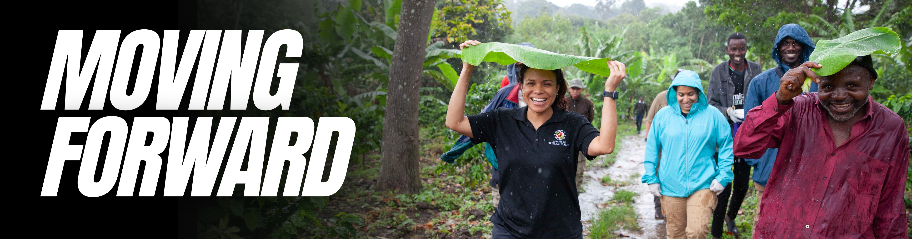
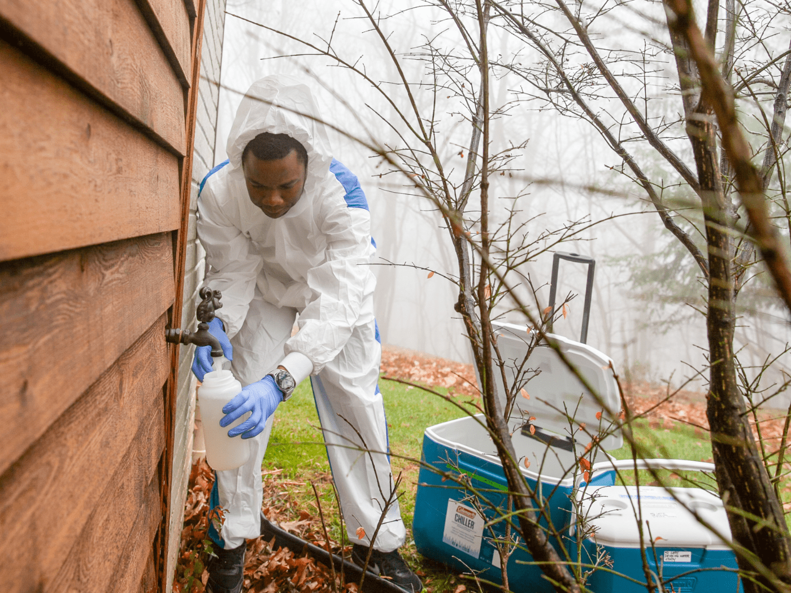
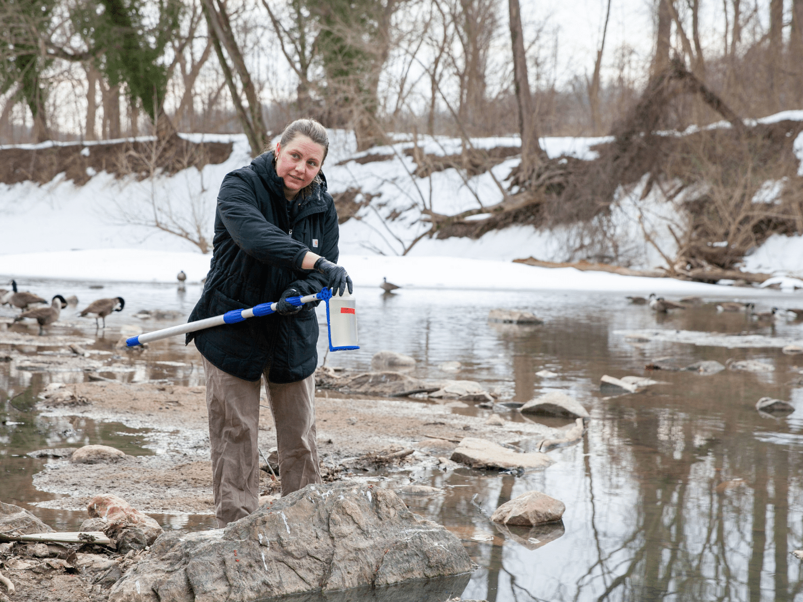
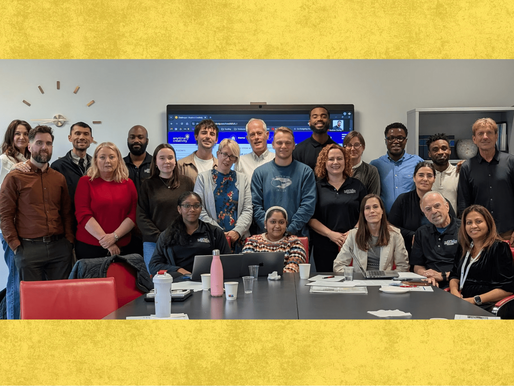

University of Maryland School of Public Health
From undergraduate to doctoral programs, find the path that fits your public health career goals.
Research & Impact
The University of Maryland School of Public Health is leading the way in harnessing artificial intelligence to address the most pressing public health challenges of our time.
News

News
Video
News

News

News
Make sure that you're really passionate about what it is that you're learning and what you're doing and the people that you're caring for. Always lead with empathy.
Crisdel Mayen Velasquez '25, Commencement Speaker
School of Public Health
4200 Valley Drive, Suite 2242